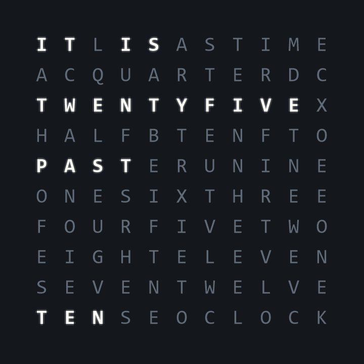
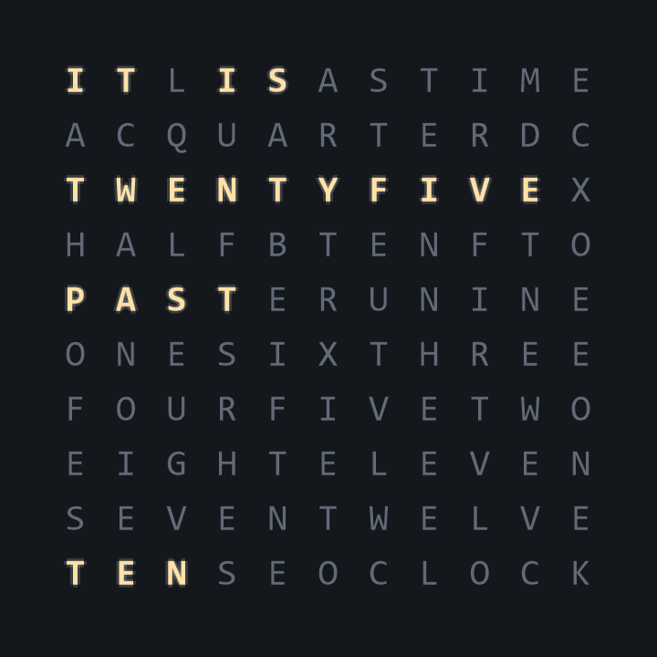
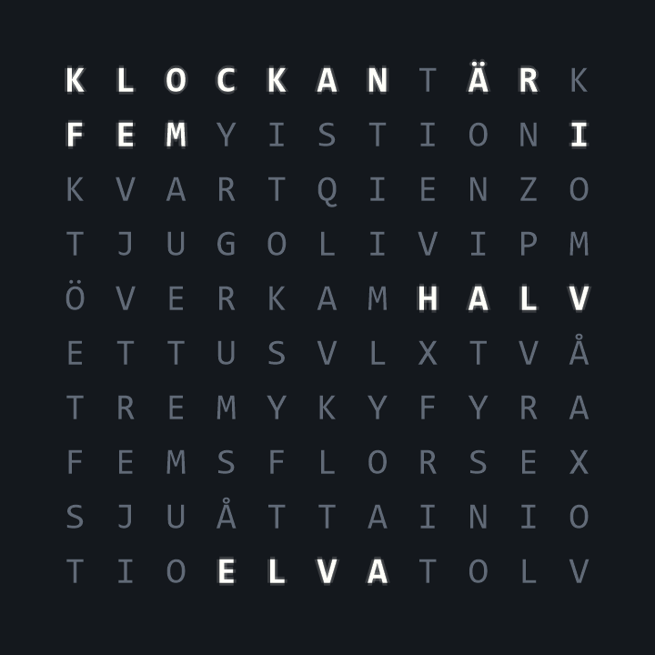

Standard installer
A small download. Setup installs Microsoft’s .NET 10 Desktop Runtime if you need it.
Download installer ↓A little character for your desktop
Let the minutes speak for themselves.
A quiet word clock that feels like yours.
Free & open source · Windows 10 / 11

Less checking the time.
More enjoying the moment.
Make it yours
Warm and glowing. Clean and understated. A little industrial. Choose the look that belongs on your desktop.


Hello. Hej.
English and Swedish clock faces, with settings to match. Follow Windows or choose a language yourself. The clock and the interface can speak different languages.
Runs on your PC. No account. No subscription.
A new home on your desktop
Voltura TextClock {{VERSION}} for Windows.
A small download. Setup installs Microsoft’s .NET 10 Desktop Runtime if you need it.
Download installer ↓Includes the runtime. Handy for a PC that won’t be online during installation.
Download offline installer ↓Extract the whole ZIP and open VolturaTextClock.exe. Includes the runtime; no installation.
Download portable ZIP ↓Good to know
Download and open an installer, then follow Setup. TextClock appears on your desktop. Open the three-line button in the corner for settings, pinning, minimizing, and closing. In the portable version, extract the entire ZIP first.
Yes. The clock and appearance settings need no connection. Optional update checks contact GitHub. The standard installer may download Microsoft’s runtime; choose the offline installer to avoid that download.
Automatic startup checks are off by default. Installed copies can check, download a verified update, and install when you choose. Portable copies link to GitHub Releases for a new download. Updates are checked against a signed manifest before installation.
The app and installers are signed with Voltura’s self-signed certificate and timestamped. This is not a publicly trusted publisher certificate, so Windows may still show a warning. Download only from this page or the linked GitHub repository.
Settings stay in your Windows user profile. Upgrades preserve your clock’s appearance and preferences. Uninstall keeps your settings, so they are ready if you come back. Read the privacy information.
Absolutely. Share an idea or report an issue, or explore the GPL-3.0 source code. Read what changed in the release notes.